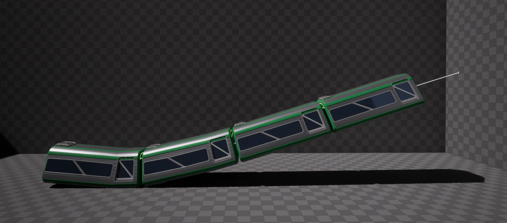
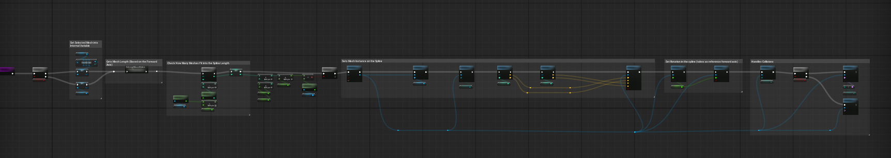
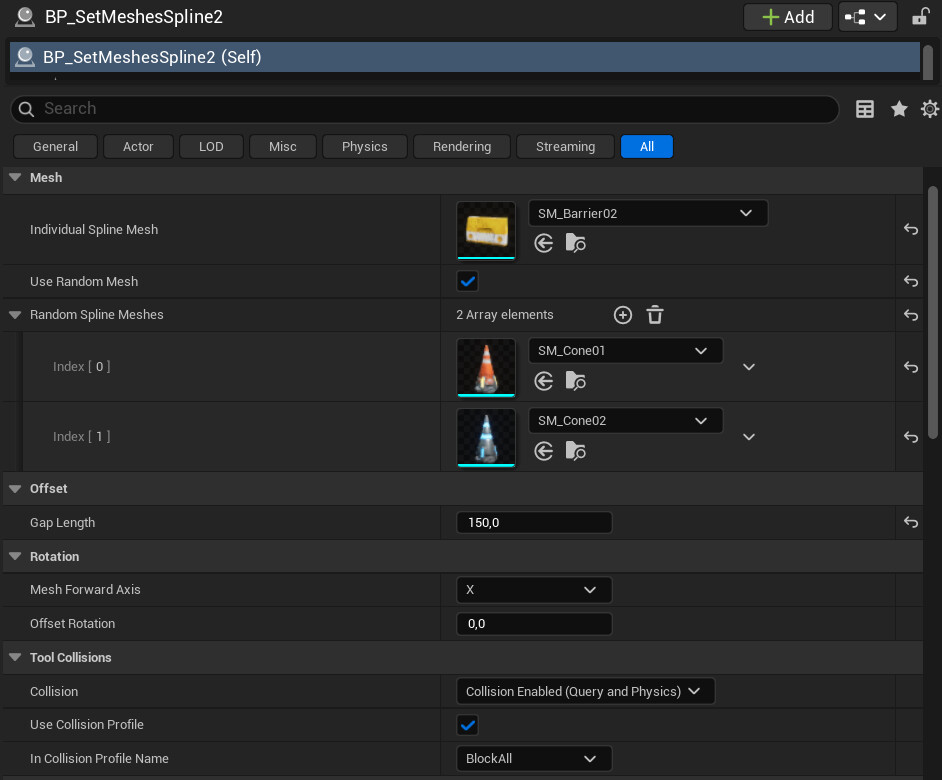

Spline Tool
Spline tool for scene dressing in Unreal.
Overview
This time I decided to build a modular tool that makes scene dressing easier, faster, and more flexible. The tool allows users to place meshes along a spline that can be edited directly on the scene. It includes a variety of customizable parameters, such as mesh selection, orientation, collision profiles, spacing between instances, and even random mesh selection.
Techincal Features
Since the tool is spline-based, it also supports curves and slopes, making it highly adaptable. To make the tool “safer” to set up, collision settings are handled through an enumerator, reducing the chance of invalid configurations and logic errors.

On the other hand, one of the main objectives of this tool was to help scene dressing while maintaining the project's performance, which led me to use the Instanced Meshes features.
My goal was to create a modular workflow that was flexible enough to fit different projects.

Learnings
Creating the tool was a challenge from beginning to end. I had not worked with splines before, so researching how they work was the first step. After understanding their uses and how powerful they can be, I designed the tool I wanted to create.
Once I had the basic behavior working, I added features like rotation, spacing, and random selection. The hardest part was getting the spacing between meshes right. At first, the space was only set at the start of the spline, not between each model. It took a lot of trial and error to add all the features I wanted, but I got there in the end!
